关于学习arm架构下的pwn的总结
通过这段时间对于arm架构的题目学习，自认为收获还是不少的。下面是对于这段时间关于arm架构的pwn题学习所进行的总结。（我其实还想再多做几道arm架构的栈题的，可是网上所找到的实在不多，等再遇到新的arm架构题目，我再添到这篇文章上吧）
运行程序&&启动调试
咋装的环境已经忘记了…（装完环境过了一段时间才开始arm架构的学习）装配环境的话，上网搜一下文章也不少。可以参考这篇文章 (26条消息) CTF pwn – ARM架构的pwn题详解___lifanxin的博客-CSDN博客
记录一下怎么启动以及调试arm架构的程序。
先checksec一下（或者用file命令也行），看看是什么架构的。
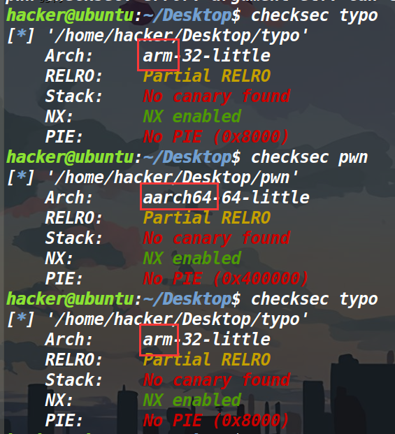
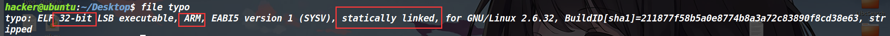
file命令可以查看程序是动态链接还是静态链接。
运行程序
如果程序是静态链接并且是32位 arm架构的话，输入qemu-arm ./程序名
如果程序是静态链接并且是aarch64架构的话，输入qemu-aarch ./程序名
如果程序是动态链接且是32位 arm架构的话，输入qemu-arm -L /usr/arm-linux-gnueabihf ./程序名
如果程序是动态链接且是aarch64架构的话，输入qemu-aarch64 -L /usr/aarch64-linux-gnu ./程序名
启动调试
启动调试和运行程序的命令很相似，仅仅是加了一个参数-g 然后后面跟一个端口。
比如程序是动态链接的32位 arm架构的话，输入qemu-arm -g 1234 -L /usr/aarch64-linux-gnu ./程序名
这个1234是你指定的端口，指定别的端口也可以。然后参照运行程序那四个命令以及上面这个命令，就可以依次类推出调试aarch64架构的命令了。
此时再打开另一个终端，输入gdb-multiarch（必须是用pwndbg，如果是peda的话，是没法正常调试的）
然后再输入target remote localhost:1234 连接到刚才开的那个端口。
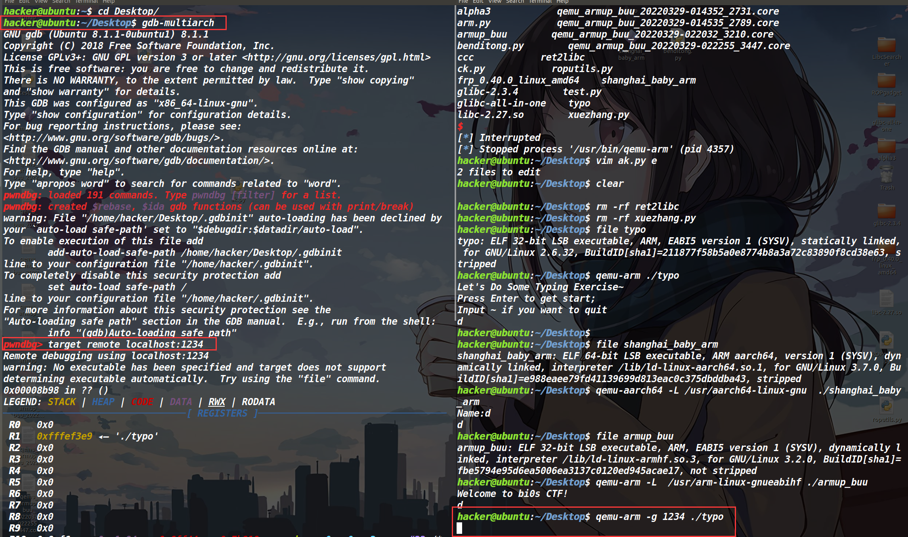
进入调试效果如图
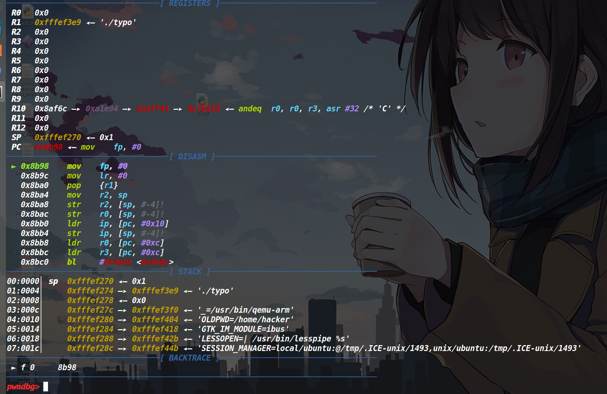
不知道为啥，arm架构进去调试似乎不是从main函数开始的，如果单步的话需要走很久很久，可以进去之后用b在想停留的那个地方下个断点，然后c过去，这样会快很多。
遇见的报错
1、如果32位遇见这个报错的话：/lib/ld-linux-armhf.so.3: No such file or directory
输入命令sudo apt-get install libc6-armhf-cross
2、如果遇见这个报错的话：Invalid ELF image for this architecture
就说明你的qemu后面跟的参数不对，就比如你这个程序是aarch64架构的，但是你qemu后面跟的是-arm。如果你这个程序是aarch64架构的，正确做法应该是qemu后面跟着-aarch64
然后关于arm架构下的指令，在网上能搜到很多，也解释的比较清楚，我就不在这里赘述了。
下面三道例题（其实我是想多写几道的，但是在网上找到可下载的题目只有这三道（还有个堆题，等学堆了再做））的下载链接：
链接: https://pan.baidu.com/s/1dRbm8k5qup7Anj9UDrsBlA?pwd=ecpr 提取码: ecpr
typo
总结：
通过这道题的收获与学习有：
1、这是做的第一道arm架构的题目，考察的就是最简单的rop，学习到了arm32的寄存器传参方式，以及最简单的rop利用。
2、在面对静态链接的程序，IDA打开之后会发现里面有几百个函数，而且也搜不到main函数，在这种情况下，可以利用搜索关键字符串，通过关键字符串去找主函数。
3、不知道是不是我的错觉，在考察简单的rop情况下，似乎师傅们都没有去花很多的精力去查看ida生成的伪代码（确实伪代码太多了），直接gdb打开看完偏移就是干。
4、在面对静态链接的程序，从ida中分析可能会异常的麻烦，如果有可能的话，其实可以靠输入内容之后观察程序的回显，猜测一些程序功能。
保护策略
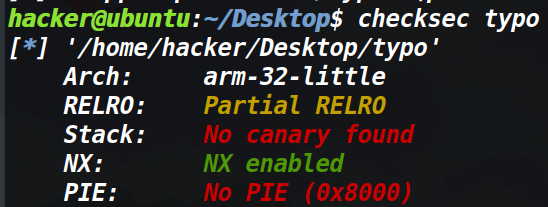
IDA分析
打开IDA之后，可以发现是静态链接，旁边有非常多的函数，难以迅速定位到主函数。因此采用一种比较好用的方法。
先运行一下这个程序，发现有这种字符串
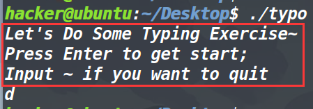
那就在IDA里面用shift+F12，查看一下这个字符串。
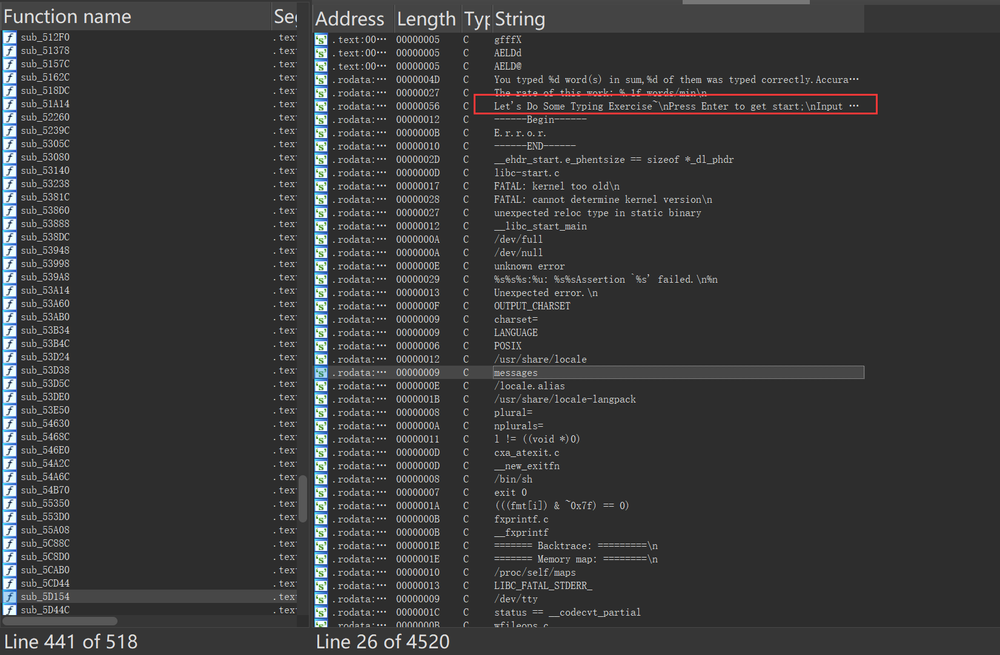
然后看一下引用，如此就可以找到主函数了
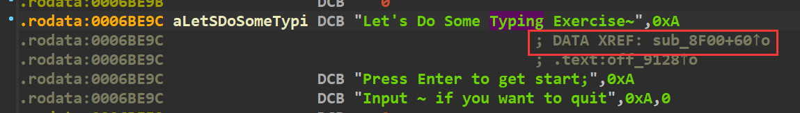
跳到汇编代码处，F5一下，即可看到主函数的伪代码（直接搜main函数的话，也是搜不到的）
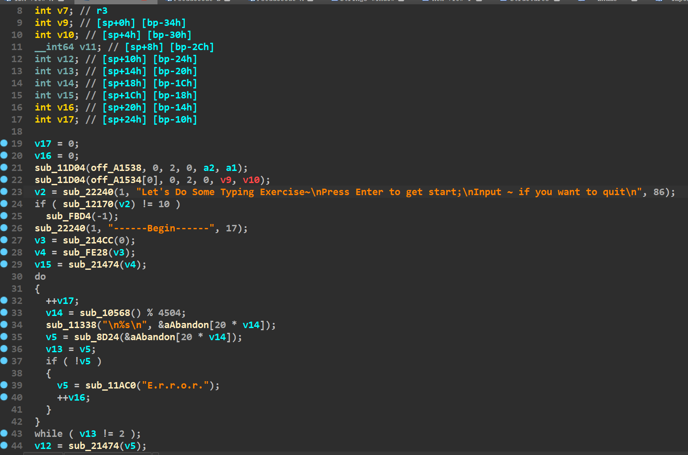
直接看伪代码有点懵，先输入一些垃圾数据（第一次必须要输入一个回车），看看是否存在溢出
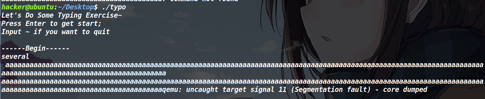
发现段错误了，那就说明存在溢出。然后用gdb调试一下，看看溢出是多少。
最初我企图用gdb单步到输入函数，然后输入垃圾数据，不过单步了很久发现依旧没有到可输入的地方，通过去看其他师傅的博客，发现了一个方便的方法。我们启动gdb之后直接输入c。c的本意是去continue到下一个断点，可是我们压根就没有下断点，因此能让这个continue停下的办法就是碰到输入函数（这一招确实妙啊）。
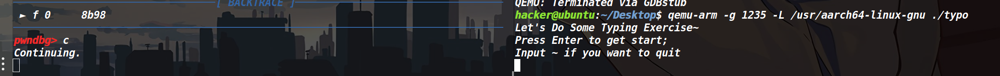
我们第一次先输入一个回车
插入一点：如果不输入回车呢？
不输入回车，去输入别的内容的话，程序会将我们输入的内容丢弃第一个字符，从而把后面的内容去当做命令处理。
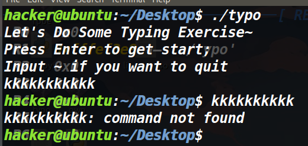
可以发现第一次输入了个kkkkkkkkk，结果报了一个command not found。那就说明这个程序试图将我们输入的内容当做命令执行。
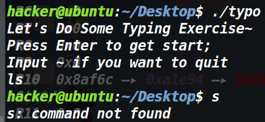
可是我们输入ls的话，它说s这个命令没有被执行，由此猜测，第一个字符被丢弃了。
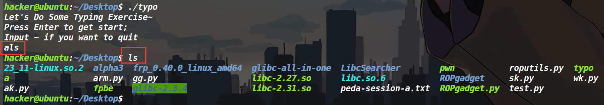
结合上图发现，事实确实如此，可是这样就发现我们输入的内容当做指令执行的话，程序就结束了，因此我们尝试只输入一个回车看看会怎么样？
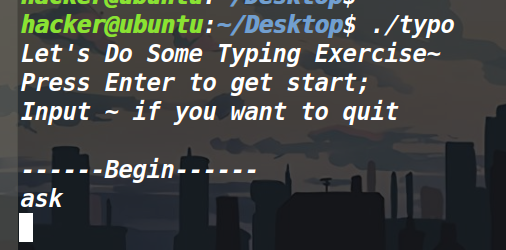
程序开始继续运行了。而且值得一提的是，人家英语也说了，按下回车键就会开始。
继续回归正题
怎么去确定偏移量？我们采用cyclic去确定输入点距离返回地址的偏移。
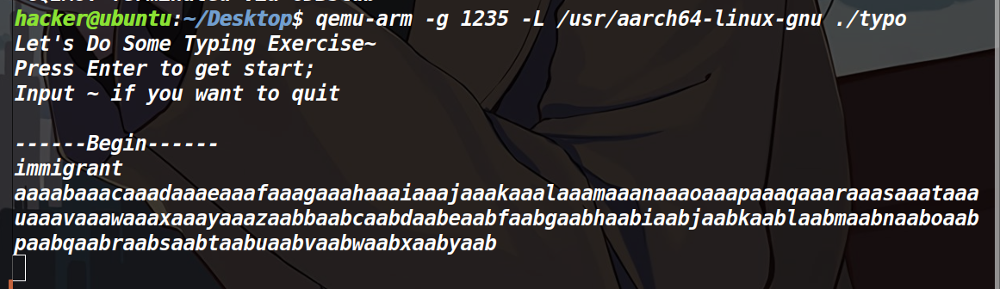
用cyclic填充两百个字符，然后用cyclic -l得到偏移。
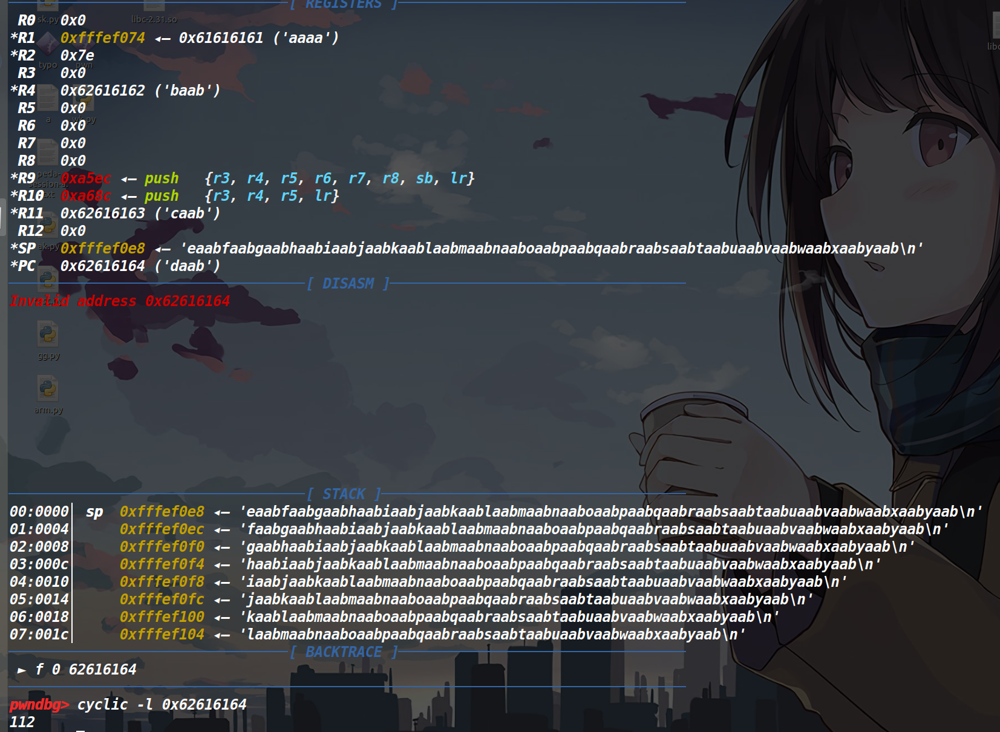
因为这是静态链接，因此我们可以很轻松的去里面拿到我们想要的/bin/sh参数和system函数。
事实上我们没有办法搜到system函数，但是猜测一下，system会调用/bin/sh，因此我们先去找一下/bin/sh
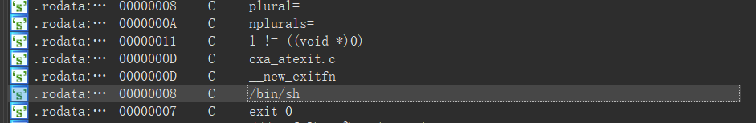
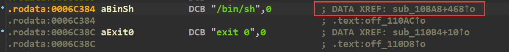
如果你的IDA没有出现上面红框里面的内容，就说明IDA还没有把所有的数据装载完，等一会就行了。
然后点上面红色框跳转过来，就是这个函数。
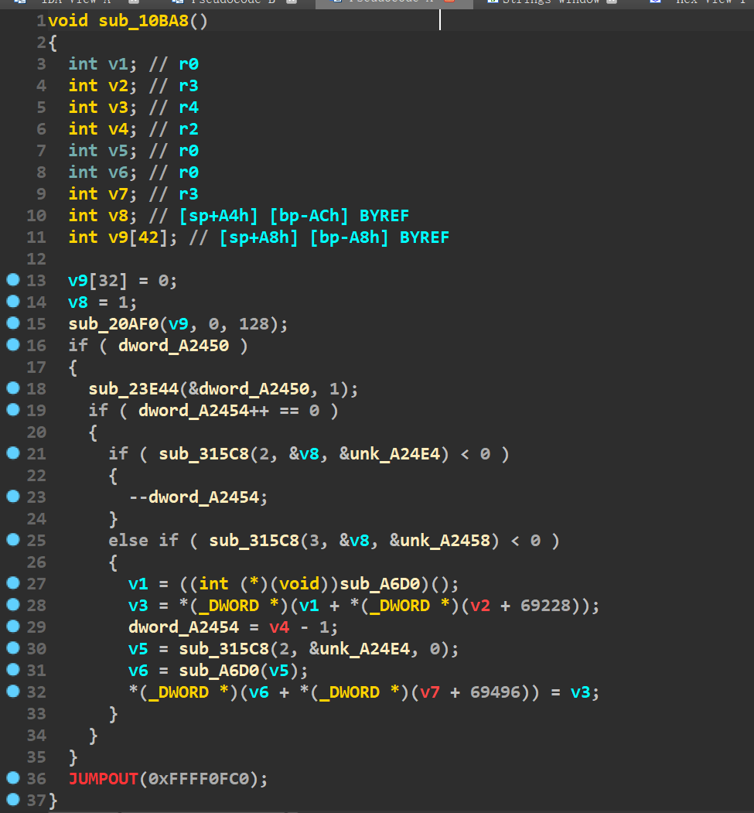
虽然我看不出来他是个system函数，但是有关系嘛？没有关系。如此，system函数的地址就是 0x10ba8
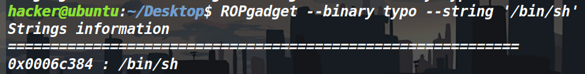
arm架构的基本知识
arm32位
这个arm32位的话，传前四个参数是用的r0~r3寄存器，如果参数再多的话，就利用栈传参（从右向左依次入栈）。函数的返回值会存在r0寄存器中。然后pc寄存器就相当于x86中的eip寄存器（始终装的都是我们下一条指令执行的地址）除此之外，arm 的 b/bl 等指令实现跳转。
因此我们就先去看看有什么可以控制r0寄存器的gadget。
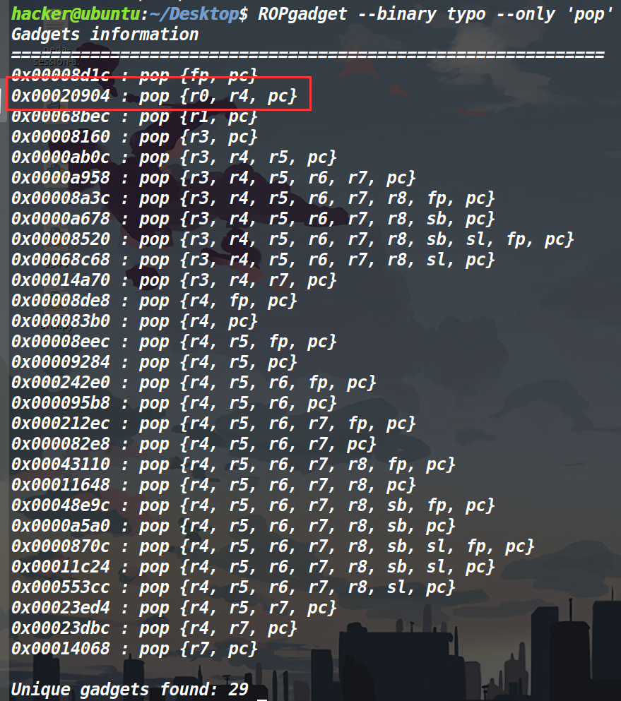
这个pop r0 r4 pc就很nice。
r4我们随便填充，pc你可以理解为ret的效果。然后payload格式跟x86的差不多。
EXP：
#coding:utf-8 |
Shanghai2018 – baby_arm
总结：
通过这道题的学习与收获有：
1、这道题也算是学习了arrch64架构下的ret2csu，与x86中的区别其实并不大。
2、mprotect函数去修改内存属性，从而执行shellcode
保护策略：
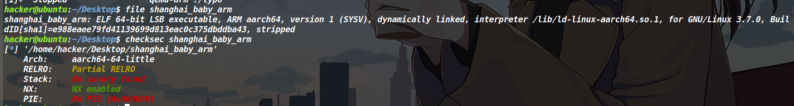
程序分析：
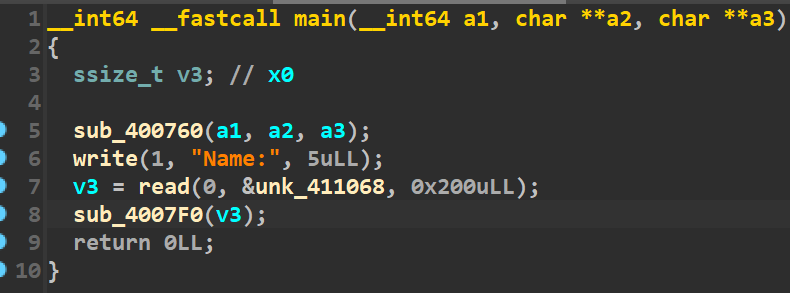
程序逻辑很简单，read一次输入，输入到bss段，没法溢出。然后sub_4007F0函数也有一次输入，输入到栈里，存在溢出。
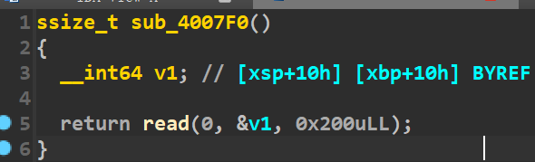
同时程序中存在一个mprotect函数。
解题过程：
劫持执行流
这道题发现在第二个read结束后，我们的数据并不能覆盖返回地址（此时返回地址在我们输入数据的上面）（如下图）
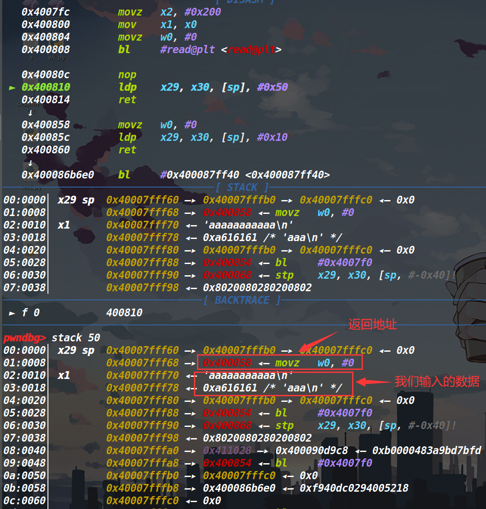
不过我们发现在0x400860的地方还有一个ret，我们单步到这个ret看看，此时的x30是什么。
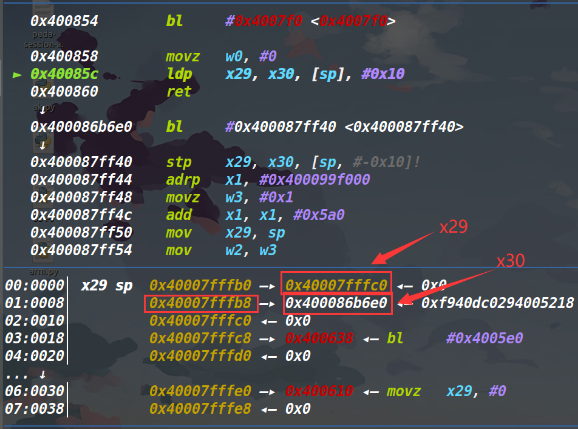
可以发现此时的x30，就是距离栈顶为2的内容，而这个内容对应的栈地址0x40007fffb8则是在我们第二次read输入的起始地址下面，也就是说我们可以控制这个地址，从而来劫持程序的执行流。
ret2csu?
由于mprotect函数可以改变内存的属性，本来这道题是bss段是只能写的，不过我们可以用mprotect将bss段变成可执行，然后往里面输入个shellcode就ok了。怎么控制mprotect的参数？
我们发现，arm架构下，也有一段汇编可以控制寄存器参数（完全可以把这段当成x86中的csu）
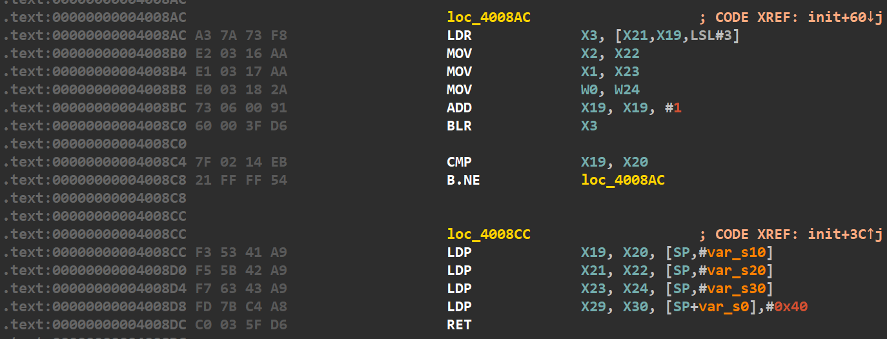
先分析下面的loc_4008cc的内容
LDP X19, X20, [SP,#var_s10] |
第一句这个LDP X19, X20, [SP,#var_s10]就是说将SP+0x10所指向的内容给x19和x20寄存器（x19寄存器拿的是SP+0x10所指向的内容，而x20寄存器拿的是SP+0x18所指向的内容）
然后第四句这个LDP X29, X30, [SP+var_s0],#0x40的意思是将SP所指向的内容给x29和x30寄存器（x29寄存器拿的是SP所指向的内容，而x30寄存器拿的是SP+0x8所指向的内容），完成这句指令之后，再将SP指针增加0x40个字节。
然后ret，这个就是返回到x30寄存器所存储的值。
再结合着刚刚分析的内容，来看一下loc_4008ac的内容。
LDR X3, [X21,X19,LSL#3] |
第一句就是说将x19的值逻辑左移3位，然后加上x21的值，将得到的这个值所指向内容给x3寄存器。（如果我们控制x19的值为0的话，就是说把x21寄存器的值所指向的内容给x3寄存器。
然后剩下的mov，add就没什么好说的了。
倒数第三行BLR指令是去跳转到X3寄存器的值，同时把下一个指令的地址存到x30里面。
然后下面的CMP和x86里面的一样了。
如此思路就出来了，几乎是跟ret2csu的利用方法一样。有两点需要注意一下。第一点就是loc_4008cc中的
LDP X29, X30, [SP+var_s0],#0x40 这个指令，虽然它是在这个loc_4008cc函数的最后，但是它传给x29和x30寄存器的时候，拿的是栈顶的值。因此布置栈中数据的时候，栈顶的内容应该是存放的x29和x30的值。
第二点，是BLR X3的时候，这个X3的值溯源一下，它是由X21充当指针来指向的，而X21的值又是SP+0x20充当指针来指向的。意思就是说，我们最终想跳转的内容必须被指针的指针所指向，因此考虑的是将X3的内容放在bss段，然后X21去存储bss段的地址（指向X3的内容），然后再把X21的值布置在栈里面。最后X3的值放入mprotect的plt地址即可（因为BLR跳的话，直接跳到了寄存器的值处，因此这里应该放的是plt地址（要求这个地址装的就是指令），got地址（装的是got表，而got表中装的才是指令）是用于指针寻址跳转的情况，当时在这里迷了一下）。
EXP
#coding:utf-8 |
inctf2018_wARMup
总结:
通过这道题的学习与收获有：
1、arm架构（32位）的bss段是可执行的！
2、这道题考察的是栈迁移，以及通过调试来确定payload的布局。这道题是比较锻炼调试能力的（至少对于现在的我来说），锻炼调试能力，我指的是不看exp的情况下，自己做这道题…
3、现在也做了三道arm架构的题了，说实话和x86下的区别不大。只要熟悉x86的做题思路，做这种题，应该很快就能适应。
保护策略：
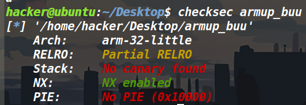
程序分析：
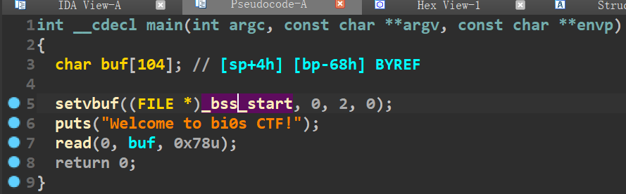
存在溢出点，但是可溢出的字节很少，因此考虑栈迁移。且没有后门函数
这道题我有的地方写的是R11（是因为IDA上看是R11），有的地方写的fp（因为gdb里看的是fp)，实际上这俩就是一个东西。
大致思路：
栈迁移的话，考虑迁移到BSS段，同时观察汇编，发现read的第二个参数（即输入的地址）是由R3传递的，而R3的值是由R11来传递的
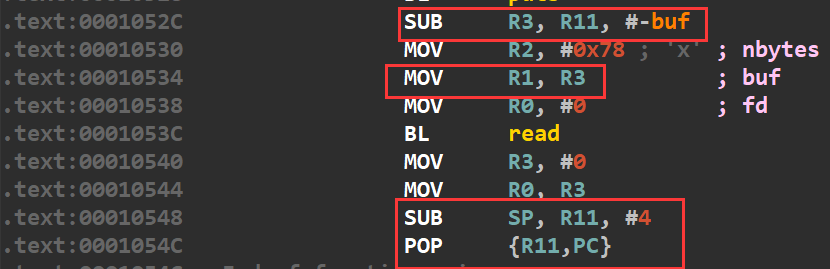
同时在最后，又有一个pop指令来控制R11和PC，因此我们是可以控制R11（也就是read的第二个参数)和程序执行流的（PC）
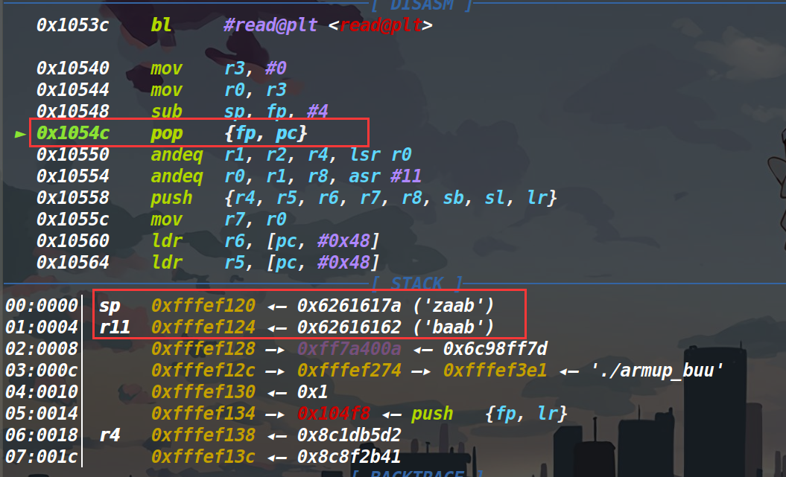
经过调试发现，这个fp距离我们输入起始的地址偏移为100,这就意味着我们需要填充100个垃圾数据，然后来控制fp以及pc。
因此第一次输入的时候，控制fp，让其为bss段地址（迁移的时候bss段尽量抬高），然后将返回地址read地址，再跑一次，让我们的第二次payload输入到bss段。
arm架构（32位）的bss段是可执行的，尽管用vmmap看的是可写不可执行（但是布置进去的shellcode确实可以执行）
因此我们就要把shellcode布置在bss段。这道题是十分锻炼自主的调试能力的，可以看见我的exp是在shellcode前面布置了两个内容，这里我并不想解释原因。最开始我自己做这道题的时候并没有写这两个内容，当时我认为直接把bss段写shellcode就行，然后控制PC指针执行过去，事实上这样做是错误的。原因请自主调试，这里考察了自主调试来布局payload（如果你可以眼睛看出来payload整体布局的话，当我什么都没说），如果连这里到最后都不理解而且还稀里糊涂的交了flag的话，那做这道题是毫无意义的。
大致思路就是这样（第二次输入布置shellcode，然后控制PC寄存器，将其指向shellcode的位置）剩下的具体细节真的没有办法记录，因为剩下的布局都是一点一点调试出来的。
关于对调试能力的总结：
我这里说一下我从刚开始学pwn，到现在也刚好是四个月了。总结了一下的调试经验（有可能在各位师傅面前算是班门弄斧了，但这依然是对这四个月所掌握的调试能力的一个记录）。
第一，你要时刻清楚你自己想要看的内容以及自己卡在了哪里
第二，在调试的过程中，遇到卡住的地方，要思考为什么会这样。
第三，在锻炼调试能力的时候，刚开始有的地方可能不知道卡住的原因是什么，建议找一份可以打通（和你思路相近的）的exp，去调试一下，再反复对比自己exp的动态调试，这样很容易找到问题。
第四，就是可能你认为你的思路很对，但就是打不通，而别人的思路都和你的不一样，由衷建议，不要放弃你的思路，到最后无非是两种可能，你通过坚持以及思考打通了自己的exp，又或者是你通过反复调试，最后发现自己的思路是错误的，不可行的。但其实不论结果，这个坚持的过程已经让你的调试能力有了不小的进步。
EXP
#coding:utf-8 |